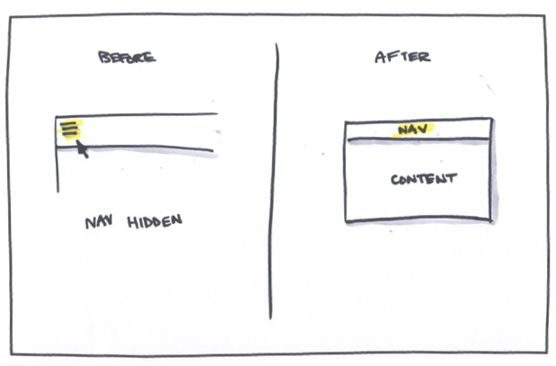
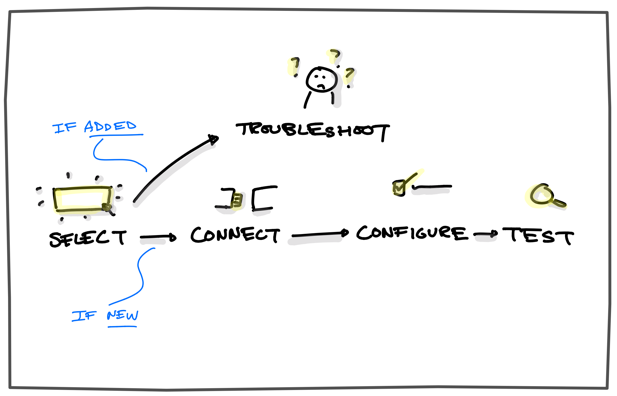

Creating a future-Proof Product Architecture
GreenBits is the leading POS system for the heavily-regulated marijuana dispensary industry. As their features grew in complexity, their interface struggled to keep up.
Primary Designer

Design At Scale and For Scale
GreenBits’ POS system needed to make their ever-expanding feature set usable so they could lower their ballooning support requests. Because the industry is heavily regulated, strict guidelines needed to be overcome to provide the best experience.
It was critical to discover more about user’s behaviors in terms of how they learn new interfaces, manage orders, and troubleshoot unique hardware.
- Usability Analysis
- User Interviews
- Support Log Analysis
Since all features fit in the following categories, having a consistent layout system makes an expanding feature set easy to find.
90% of the employees’ time is spent completing sales, so prioritizing and optimizing this flow saves time and prevents error.
Because all the hardware variables are known, creating a simple hardware setup process with in-context guidance reduces common support requests.
